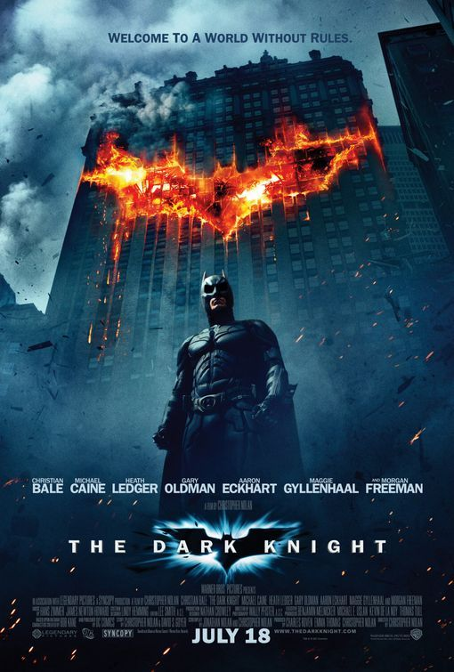

Home Movie Ranking Birthday Invite About Me Contact Me
The Best Movies According to João Angello
My top 5 movies of all-time.
The Godfather

Crime / Drama
Don Vito Corleone, head of a mafia family, decides to hand over his empire to his youngest son Michael. However, his decision unintentionally puts the lives of his loved ones in grave danger.
The Dark Knight

Action / Crime / Drama
When the menace known as the Joker wreaks havoc and chaos on the people of Gotham, Batman must accept one of the greatest psychological and physical tests of his ability to fight injustice.
The Lord of the Rings: The Return of the King
.jpg)
Action / Adventure / Drama
Gandalf and Aragorn lead the World of Men against Sauron's army to draw his gaze from Frodo and Sam as they approach Mount Doom with the One Ring.
Fight Club

Drama
An insomniac office worker and a devil-may-care soap maker form an underground fight club that evolves into much more.
Star Wars: Episode V - The Empire Strikes Back

Action/ Adventure / Fantasy
After the Rebels are overpowered by the Empire, Luke Skywalker begins his Jedi training with Yoda, while his friends are pursued across the galaxy by Darth Vader and bounty hunter Boba Fett.